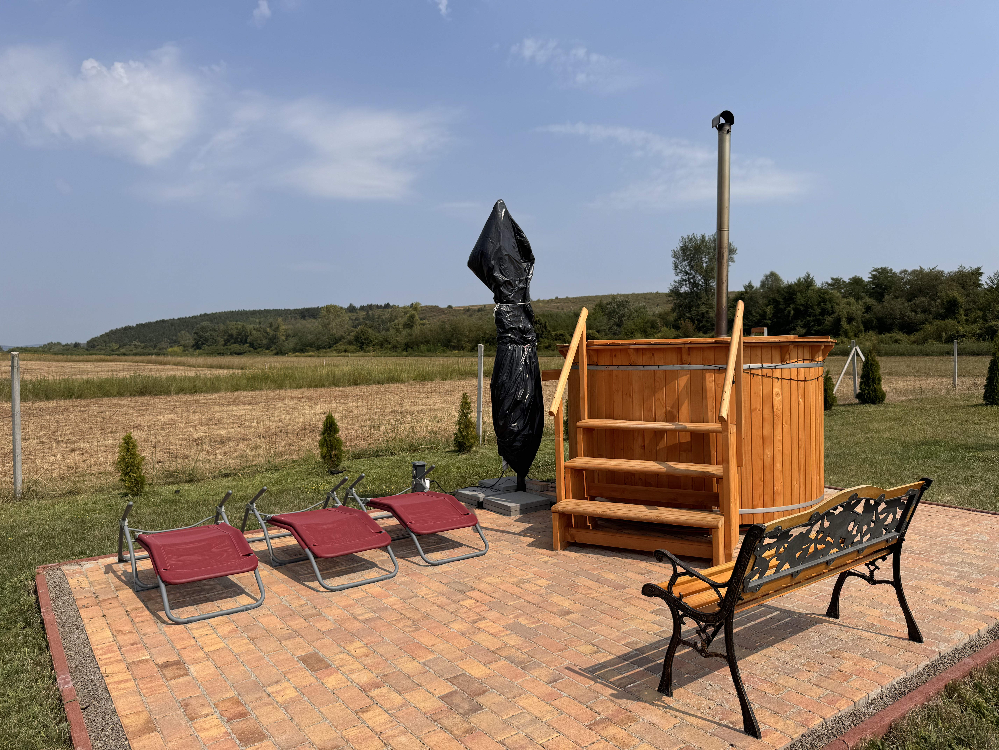

Köszöntjük kedves vendégeinket újonnan megnyílt vendégházunkban Demjénben, a Laskó patak mentén, a Demjéni Termál Völgyben. Vendégeink nyugodt, csendes környezetre találnak, hiszen közelünkben nem található lakott ingatlan.